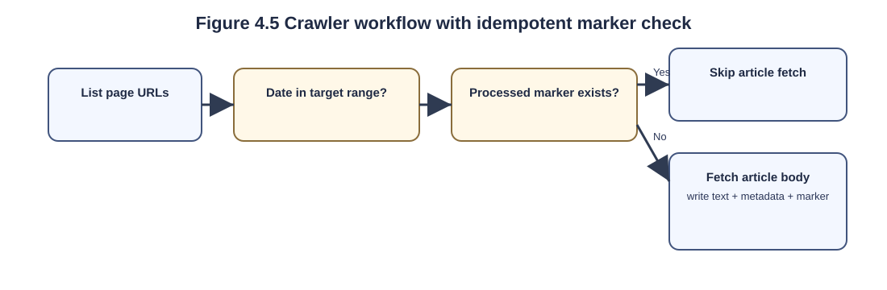
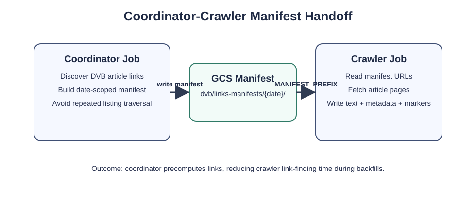
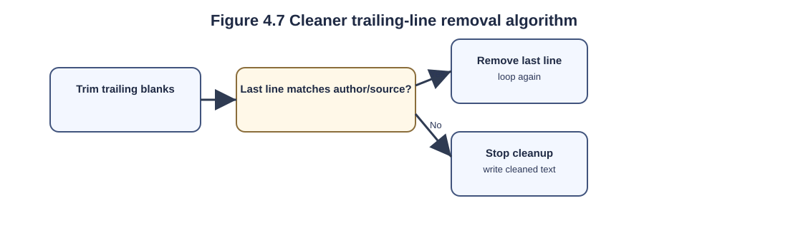
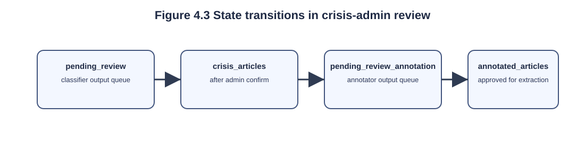
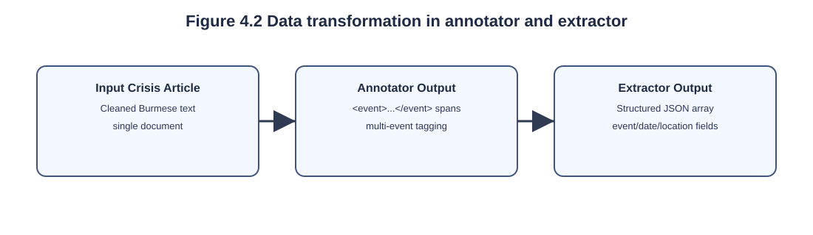
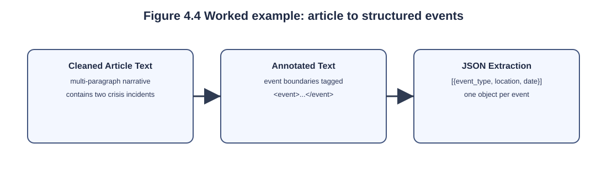
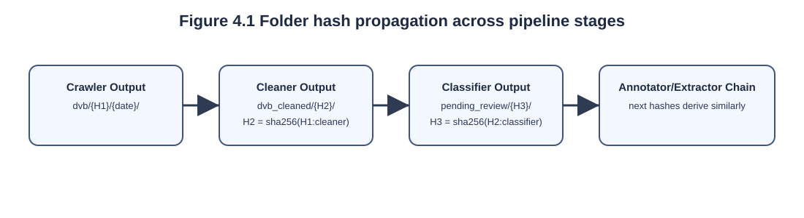
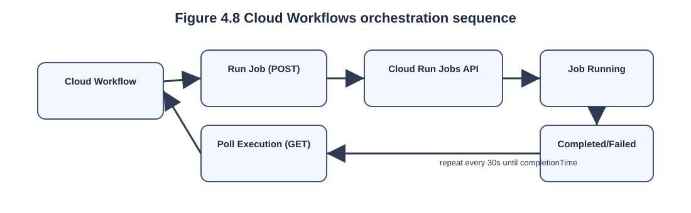

This chapter describes the implementation of the Crisis Event Monitoring system in detail. The chapter is organised around the journey of a single article through the entire pipeline, beginning at the moment the article appears on the DVB website, and ending at the moment its extracted event records become available to analysts and researchers through the dashboard. Each section presents the implementation of one component, the design choices behind it, and short code excerpts from the actual codebase. Together, the sections cover the seven pipeline stages, the supporting infrastructure (containers, build pipeline, lineage tracking), the data formats produced at each stage, and the public-facing interfaces of the system.
To make the implementation easier to follow, four supplementary diagrams are included in this chapter: the folder-hash propagation chain (Figure 4.1), the data transformation in the annotator and extractor stages (Figure 4.2), the state transitions in the analyst review process (Figure 4.3), and a worked example tracing one article from raw text to structured JSON (Figure 4.4). All code listings shown in this chapter are exact excerpts from the corresponding source files in the project repository, abbreviated only for length.
The system is implemented as a collection of nine Cloud Run components on Google Cloud Platform, each packaged as an independent Docker container. Five of these components are Cloud Run Jobs that perform batch work and scale to zero between executions: the crawler, the text cleaner, the classifier, the annotator, and the extractor. Three are Cloud Run Services that respond to HTTP requests at any time: the analyst-facing crisis-admin web interface, the events-api REST endpoint that serves event records to the dashboard, and the mlflow tracking server. The ninth component is the frontend dashboard itself, deployed as a static website hosted directly in a Cloud Storage bucket.
Two design choices distinguish the implementation from a typical machine-learning pipeline. First, the system is fully reproducible at the code level: every component’s source directory is hashed during deployment, and the hash is propagated forward through the pipeline so that every output can be traced back to the exact code version that produced it. Second, the system inserts a human-in-the-loop checkpoint between the automated classifier and the comparatively expensive language-model stages, ensuring that the small but non-zero false-positive rate of the classifier does not waste Gemini API calls on irrelevant articles. Both of these design choices are explained in detail in their respective sections below.
Every component lives in its own subdirectory under Codebase_Container/, accompanied by a Dockerfile, a manifest of dependencies (either requirements.txt for Python or package.json for Node.js), and a Cloud Build configuration. The repository also contains a top-level main.tf file that declares all jobs, services, buckets, and IAM roles in a single Terraform configuration, and a workflow.yaml file that defines the daily orchestration sequence as a Cloud Workflows definition.
This layout means that a developer can browse the entire system from one place, and that any change to a component can be deployed by a single git push.
Each component is assigned CPU, memory, and timeout values in the locals block of main.tf according to its workload. The classifier is provisioned with 4 vCPU, 16 GB of memory, and a 3,600-second timeout because it loads the Gemma-300M sentence-transformer at startup and processes large daily batches. The crawler uses 2 vCPU, 512 MB, and a 1,200-second timeout to tolerate slow DVB responses. The text cleaner, coordinator, annotator, and extractor are lightweight and are therefore provisioned with modest resources, as their work is primarily I/O-bound rather than CPU-intensive. The annotator and extractor use a 600-second timeout to accommodate Gemini API latency. On the service side, crisis-admin and events-api are configured with 1 vCPU and 512 MB, while mlflow uses 2 vCPU and 4 GB. All services scale to zero when idle, avoiding compute cost outside active use.
The first stage of the pipeline retrieves DVB Burmese news articles from the publisher’s website. The crawler is implemented in Node.js to take advantage of two mature libraries that are both ergonomic in JavaScript: Axios for HTTP requests and Cheerio for jQuery-style HTML parsing. The crawler runs as a Cloud Run Job and is triggered once per day by Cloud Scheduler at 00:00 Asia/Bangkok local time, although it can also be invoked manually with a custom date range from the command line.
The crawling process is orchestrated by a separate coordinator job rather than being executed as a standalone scraper. The coordinator traverses the DVB listing pages beginning at https://burmese.dvb.no/categories/news?page=1, identifies article links within the requested date range, and stores the discovered URLs as a manifest in Cloud Storage before launching a single crawler sub-job. The crawler then consumes this manifest and retrieves article content directly, thereby avoiding a second traversal of the listing pages. By default, the coordinator processes articles published on the previous day, although this behavior can be overridden through CRAWL_START_DATE and CRAWL_END_DATE, or via the corresponding command-line flags in DD-MM-YYYY format, which supports historical backfilling and reruns after outages.
Before fetching the body of an article, the crawler computes an MD5
hash of the article URL and checks whether a marker file already exists
in Cloud Storage at the path
dvb/
Each crawler run produces three classes of output in the
pipeline-data Cloud Storage bucket. Per-article files are written to
dvb/
Figure 4.5 illustrates the complete crawler workflow as a single flowchart, showing the two key decision points (date-range filter and marker-file existence check) that determine whether each candidate article is fetched, skipped, or used as the signal to halt pagination.

A dedicated coordinator job implements link-discovery and
bulk-backfill orchestration for the crawler. The coordinator’s source is
Codebase_Container/coordinator_job/DVB_Burmese.coordinator.js.
Its responsibilities are:
dvb/links-manifests/{YYYY-MM-DD}/.CRAWL_START_DATE / CRAWL_END_DATE (or
--start-date / --end-date) override the range;
a --manifest-only flag can force manifest generation
without launching the crawler.--force flag is
supplied.MANIFEST_PREFIX) when launching
the crawler sub-job via the Cloud Run Jobs REST API. The crawler detects
MANIFEST_PREFIX and reads the manifest instead of
traversing listing pages.Figure 4.6 illustrates the coordinator-crawler connection used during manifest-driven backfills.

Resource allocation for the coordinator is modest since the job is
I/O-bound: see main.tf for the canonical values (for
current deployments the coordinator is provisioned as
dvb-coordinator-job with 1 vCPU, 512Mi memory and an
extended timeout to allow large backfills). The coordinator therefore
acts as the canonical source of truth for link manifests used during
bulk operations and keeps the crawler lightweight during coordinated
backfills. By precomputing and supplying manifests, the coordinator
reduces the crawler’s link-finding time during bulk backfills because
the crawler reads pre-discovered URLs instead of re-traversing listing
pages.
Burmese news articles published on the DVB website typically contain two pieces of trailing metadata that are not part of the actual article body: an author byline (one or two short lines containing the journalist’s name in Burmese script, optionally followed by a translator’s name) and a source citation (a single line beginning with “Source:”, “ရင်းမြစ်:”, or “သတင်းရင်းမြစ်:”). These trailing lines must be removed before the text is passed to the classifier and language model, because they would otherwise bias the binary classification (author names are common across both crisis and non-crisis articles) and inject irrelevant information into the language-model context.
Author bylines are detected by a single regular expression that matches lines consisting of two to twenty characters drawn from the Myanmar Unicode block (U+1000–U+109F), the zero-width joiner range (U+200B–U+200D), and the Myanmar extended block (U+AA60–U+AA7F). The length bound prevents the regex from accidentally matching short article sentences, which are almost always longer than twenty characters. The pattern is applied only to the very last non-empty line of the article (and the last few lines, recursively, in case there are multiple author lines), so body content can never be removed by mistake.
Source citations are detected by three small regular expressions, one for each of the three citation conventions observed on DVB articles. The first pattern is case-insensitive and matches lines that begin with the English word “Source” followed by an optional whitespace, a colon, optional whitespace, and any text — covering the form “Source: DVB Burmese News” that occasionally appears in articles translated from English wires. The second pattern matches the Burmese word for “source” (ရင်းမြစ်) followed by a colon and any text, which is the most common citation form in original DVB articles. The third pattern matches the longer Burmese phrase for “news source” (သတင်းရင်းမြစ်), which a smaller subset of DVB articles use as an alternative citation header. All three patterns are anchored at the start of the line and are evaluated against each candidate trailing line in turn; if any pattern matches, the line is removed and the loop continues to the next candidate.
The cleaner reads each article line by line. It first removes trailing empty lines, then iteratively examines the last remaining line: if the line matches an author-name pattern or a source-citation pattern, it is removed and the loop continues; otherwise the loop stops. This conservative bottom-up approach guarantees that body content is never affected, because as soon as a non-matching line is encountered, the cleaner terminates. Figure 4.7 illustrates the algorithm visually, showing on the left a representative input article with the trailing metadata that should be removed (rendered with strike-through), and on the right the three-step state machine that performs the removal.

The relevant section of the cleaner source is reproduced below.
It is worth noting what the cleaner does not do. It does not validate articles against a minimum length or a Burmese-character ratio, and it does not discard any article — every input file is written to the output bucket, although typically a few trailing lines shorter than the input. This conservative design was chosen because the binary classifier in the next stage already filters out non-crisis articles, and adding a separate quality gate at the cleaner stage would risk discarding articles whose author lines are slightly atypical.
After cleaning, every article is passed through a binary classifier that decides whether it describes a crisis event. Articles that are predicted to be crisis-positive are forwarded to the analyst review queue; articles predicted to be non-crisis are silently dropped, which significantly reduces the analyst’s review load and prevents the language-model stages from being invoked on irrelevant content. The classifier is implemented as a Cloud Run Job that loads a previously-trained scikit-learn pipeline at startup and applies it to the day’s batch of cleaned articles.
The classifier represents each article as a 768-dimensional dense vector produced by Google’s Gemma-300M multilingual sentence-transformer. Gemma was selected as the embedding model for three reasons. First, it is multilingual and provides strong representations for Burmese, which is essential because the article corpus is overwhelmingly in Burmese. Second, at 300 million parameters it is small enough to run on a CPU, allowing the classifier to be deployed on a 4-vCPU Cloud Run Job without GPU resources. Third, mean-pooling over its token embeddings produces a fixed-length vector that is directly compatible with downstream sklearn classifiers. The embedding step is encapsulated in a custom GemmaEmbeddingVectorizer class that conforms to the scikit-learn TransformerMixin interface so it can be inserted into a standard sklearn Pipeline.
On top of the Gemma embeddings sits a binary classifier (a logistic-regression head trained offline on a labelled dataset of approximately 1,200 Burmese articles, half crisis and half non-crisis). At prediction time, the model returns both the predicted class label (“crisis” or “non-crisis”) and the predicted-probability confidence. The classifier and the embedding vectorizer are bundled into a single sklearn Pipeline object, which is serialised to a pickle file (crisis_model.pkl) and loaded once at job startup.
Articles classified as crisis-positive are written to
pending_review/
The crisis-admin component is a Cloud Run Service that exposes a
small Flask web application to a designated analyst. It implements the
human-in-the-loop checkpoint of the pipeline, in which the analyst
reviews each article that the classifier has flagged as crisis-positive
and either approves it for downstream language-model processing or
rejects it and removes it from the queue. The same component also
handles a second review phase that occurs after the annotator stage, in
which the analyst inspects the
The service exposes a small surface of HTTP endpoints, each handling
a single, well-defined action. Three GET endpoints render HTML pages:
/admin renders the analyst dashboard listing all pending and annotated
articles, /admin/view displays the full text of a single selected
article for inspection, and /admin/view_event_tags displays an annotated
article with its
Figure 4.3 illustrates the state transitions that an article
undergoes during the review process. After classification, the article
is parked under the pending_review/

To trigger a downstream Cloud Run Job from the admin service, the application issues an authenticated POST request to the Cloud Run Jobs REST API. The request URL is constructed from the project ID, region, and target job name, and is authenticated using a Google-supplied OAuth2 access token obtained through Application Default Credentials. The relevant code is reproduced below.
This pattern keeps the admin service stateless and removes the need for a separate orchestration tier — the same primitive that Cloud Workflows uses to start jobs is also available to the admin code. The full confirm endpoint, including the blob-move logic and validation that the request refers to an article from the latest hash version, is shown below.
After an analyst approves a crisis article, the article enters the
language-model portion of the pipeline. This portion comprises two
distinct jobs: dvb-annotator-job inserts

The annotator is a Python job built on the google-genai SDK (version
1.10.0). It reads each approved article from
crisis_articles/
The 13-rule prompt is the most important piece of intellectual property in the annotation stage. It is reproduced in full in Section 4.10 of the original report, but its key directives are: tag only real disaster events drawn from a fixed scope (Fire, Airstrike, Armed Conflict, Natural Disaster, Attack, and Bombing); merge sentences that describe the same event on the same day at the same location into a single tag; create separate tags when the date or location changes, even if the events are similar in kind; and never tag historical references that appear only as background context. The prompt also instructs the model to take complete sentences (never to cut a sentence mid-way) and to include immediately related details such as casualty counts and damages within the same tag.
Once the analyst approves an annotated article, the extractor job
reads the article and submits each
The extraction prompt itself is substantially longer and more
prescriptive than the annotation prompt. It begins by establishing scope
(“You must completely ignore any text outside
The structured event record produced by the extractor contains twelve fields. The crisis_type field is one of four enumerated values (Violent_incident, Explosion event, Fire, Natural disaster). The location field contains the Township-Region-Country triple. The date field contains the absolute event date in DD/MM/YYYY format. Four boolean-or-NA fields describe whether civilians, women, children, or civilian infrastructure were affected. A fifth boolean field describes whether civilians were displaced. Three numeric-or-NA fields record civilian fatalities, non-civilian fatalities, and the number of people displaced. Finally, the entities field is a list of organisation names involved in the event. Fields whose values are not mentioned in the source article are populated with the sentinel string “NA” rather than being omitted, so every record has the same shape.
Figure 4.4 shows a complete worked example tracing one Burmese
article through the annotator and extractor stages. The article reports
two distinct crisis events on the same day — an airstrike in the Sagaing
Region and an armed clash in Kayin State — and is exactly the kind of
multi-event input that motivated the design of the annotation rules. The
figure shows the cleaned article on the left, the same article with

The structured event records produced by the extractor are persisted
to two storage backends in parallel. The full JSON array, exactly as the
model returned it, is written to
llm-extraction/
Each Firestore document represents exactly one extracted event and contains thirteen top-level fields. The thirteenth field, called event, contains the twelve-field JSON object produced by the language model; the other twelve fields wrap that payload with metadata that supports lineage, identification, and ordering. The metadata fields are: event_id and firestore_document_id (which always have the same value), document_name, source_filename, event_index (the position of the event within the source article), source_blob (the full GCS path of the annotated article), source_folder_hash and used_folder_hash (which together identify the upstream pipeline run), events_folder_hash and output_hash (which identify the extractor run), event_date (the date string from the event payload, copied to the top level for indexing), and updated_at (an ISO-8601 timestamp). The single helper function that builds a Firestore document from these fields is shown below.
Each event record’s identifier follows the convention {output_hash}{article_id}{event_index}, where output_hash is the extractor’s folder hash, article_id is the source filename with its extension stripped, and event_index is the zero-based position of the event within its source article. Identifier parts are normalised by replacing any character that is not alphanumeric, hyphen, or underscore with an underscore; this ensures that identifiers are always valid Firestore document IDs regardless of the source filename. Because the document ID and the event_id field share the same value, downstream consumers can construct the full document path from the identifier alone, without an intermediate lookup.
The extractor uses Firestore’s set(merge=True) operation to write each event record. If a document with the same identifier already exists — for example, because the extractor was re-run on the same article — its fields are overwritten with the new values rather than duplicated. Before each write, the extractor also queries the events collection for any existing document with the same source filename and event_index but a different identifier, and deletes any such document. This cleanup step prevents legacy records that were written under a previous identifier convention from accumulating and ensures that one event always corresponds to exactly one Firestore document.
The dashboard is the only end-user-facing component of the system. It is implemented as a single static HTML file (crisis-dashboard.html) hosted in a Cloud Storage bucket configured for public web serving, with no server-side rendering or templating. The static frontend retrieves event records from the events-api Cloud Run Service, geocodes each event’s location to a latitude-longitude pair using a hardcoded township lookup, and renders the data as both an interactive geospatial map (using Leaflet.js) and a set of temporal trend charts (using Chart.js).
The events-api service is implemented as a small Flask application (events_api/main.py) that exposes two GET endpoints. The first is /health, a simple liveness probe used by Cloud Run that returns a JSON payload reporting the service status and the name of the Firestore collection that the service is currently reading from. The second is /events, which is the primary endpoint of the service: it translates HTTP query parameters into a Firestore query, applies pagination, and returns the matching documents as a JSON array. Both endpoints are public on the internet but read-only; no POST, PUT, or DELETE methods are exposed, since the only writer to the events collection is the dvb-extractor-job, which writes through the Firestore SDK rather than the HTTP API.
The /events endpoint accepts five optional query parameters, all of which can be combined to produce a more selective query. The limit parameter sets the maximum number of records to return, defaulting to 50 and clamped to the range 1 to 200; the upper bound is in place to protect both the dashboard’s rendering performance and the Firestore read budget. The folder_hash parameter filters records by their used_folder_hash field, returning only the events extracted by a specific upstream pipeline run, which is useful when the analyst wants to verify the output of a particular deployment. The document_name parameter filters by the original article filename and is most useful when an analyst wants to inspect every event extracted from a single article. The event_id parameter performs a lookup of a single record by its full identifier; this is used when the dashboard’s map markers are clicked to retrieve the full details of an individual event. The start_after parameter is an ISO-8601 datetime string used as a pagination cursor: when supplied, the endpoint returns only records whose updated_at field is strictly older than the supplied value, which combined with the descending ordering on updated_at provides simple cursor-based pagination through the entire collection.
The relevant section of the Flask application is reproduced below. Note how all five parameters are parsed defensively: a non-integer limit value falls back to the default of 50 (clamped to the 1-200 range), and an unparseable start_after value is silently ignored. This forgiving behaviour reflects the intent that the endpoint should be safe to call from a browser frontend even with invalid bookmarks or stale URLs.
A typical response to GET /events?limit=20&folder_hash=8af3c0b1 is shown below. The response wraps the matching documents in an envelope reporting the requested limit, the actual count returned, and a normalised echo of the filters applied. Each event document includes both the metadata wrapper and the original twelve-field event payload nested under the event key.
The dashboard’s geographic distribution map requires every event location to be resolved to a latitude-longitude pair. Because no public geocoding API provides reliable coverage of Myanmar township names — Nominatim, in particular, returns no result for many township-level queries, and is especially sparse in border regions where the majority of conflict events occur — the dashboard ships with a hardcoded lookup table containing approximately two hundred Myanmar township names mapped to their geographic coordinates. The table is implemented as a JavaScript object literal embedded in the dashboard HTML, with each key in lowercase and each value a two-element [latitude, longitude] array.
To handle articles whose location strings cannot be matched against the township table, the dashboard implements a three-tier offline fallback chain followed by an online tier. The first tier strips suffixes such as “Township”, “District”, and “sub-township” before performing a case-insensitive lookup. The second tier searches for any of the fourteen state or region names embedded in the location string and returns the corresponding state-level centroid. The third tier returns a fixed coordinate at approximately the geographic centre of Myanmar (21.0° N, 95.5° E), so an unrecognised event is at least plotted somewhere on the map rather than silently dropped. Only if all three offline tiers miss does the dashboard fall back to a Nominatim HTTP request, which is rate-limited and may fail.
In practice, the township-level lookup resolves the large majority of locations in DVB articles, and the state-level fallback captures most of the remaining cases. The Nominatim path is exercised rarely, primarily for the occasional non-Myanmar location string that appears in regional crisis reports. Several common alternate spellings and historical names are included in the table — for example, both “pyin oo lwin” and “maymyo” map to the same coordinates, and both “kale” and “kalay” map to the same coordinates — so that the lookup succeeds regardless of the romanisation used in the source article.
A defining feature of the implementation is that every output of every pipeline stage is written under a path that uniquely identifies the version of every component that produced it. This section explains how the path scheme works, how the hash chain is constructed, and what guarantees the design provides.
Two distinct kinds of hash are used in the system. The content_hash of a stage is a SHA-256 hash of all source files in that stage’s codebase directory, computed by Terraform during deployment and embedded in the Cloud Run Job’s environment as the CONTENT_HASH variable. The folder_hash of a stage’s output is a SHA-256 hash that combines the previous stage’s folder_hash with the current stage’s content_hash, using the formula folder_hash = SHA-256(previous_folder_hash : current_content_hash). The chain is initialised at the crawler with the crawler’s content_hash alone (since there is no upstream stage).
Figure 4.1 visualises this chain across the first four pipeline stages. Each stage reads the previous stage’s output from a folder named after the previous folder_hash, computes its own folder_hash by combining that value with its own content_hash, and writes its output under the new folder_hash.

This scheme has three useful properties. First, any change to a stage’s source code changes its content_hash, which in turn changes every downstream folder_hash; a single character edit to the cleaner causes the entire downstream chain to migrate to a new path, leaving the previous outputs untouched. Second, the full folder_hash for any stage’s output transitively depends on every upstream code version — a single string therefore captures the complete pipeline lineage of that output. Third, outputs from different code versions never collide, because they are written under different folder paths; both the old and new outputs co-exist in the same bucket and can be compared, used in A/B tests, or reverted to without any data migration.
To support efficient lineage queries, the system maintains a small Neo4j graph that records, for each pipeline stage, the latest folder_hash that has been written for each (bucket, folder_prefix) pair. After every successful write, the producing stage calls write_folder_hash_to_neo4j_env with its bucket, folder prefix, and new folder_hash; downstream stages then call query_latest_folder_hash_from_neo4j_env at startup to discover which folder_hash they should read. This indirection allows downstream stages to find their input without scanning the bucket for the most-recent path, and it also serves as a queryable manifest of every deployment in the system’s history.
The system uses two distinct mechanisms to coordinate work, depending on whether the work is fully automated or analyst-driven. Stages 1 to 3 (crawler, cleaner, classifier) are orchestrated by Cloud Workflows, which sequences the three jobs and waits for each to complete before launching the next. Stages 5 to 6 (annotator and extractor) are triggered on demand by the crisis-admin service through the Cloud Run Jobs REST API, as described in Section 4.5.
The Cloud Workflows definition lives at workflow.yaml in the repository root. Its main flow runs the three Stage 1–3 jobs sequentially, polling the Cloud Run Executions API every thirty seconds until the job’s completionTime field is present. If a job fails, the workflow raises an exception, which is logged and surfaced through Cloud Monitoring alerts. After all three jobs succeed, an optional notification subworkflow can be invoked to send a webhook-driven email to a configured address.
Figure 4.8 illustrates the orchestration flow as a sequence diagram, showing how Cloud Workflows interacts with the Cloud Run Jobs API on each invocation. For every job in the daily pipeline, the workflow issues a POST request to launch the job’s execution, captures the execution name from the response, and then enters a polling loop that issues a GET request to the executions endpoint every thirty seconds until the response includes a completionTime field. Once the field is present, the workflow inspects the status to determine whether the job succeeded or failed, and either proceeds to the next job in the sequence or raises an exception that aborts the entire run.

This polling-based approach is intentionally simple and avoids the operational overhead of a more elaborate event-driven architecture. Although it does mean that each completed job’s status is observed with up to thirty seconds of latency, the polling cost is negligible compared to the cost of the jobs themselves, and the simplicity of the workflow definition makes it straightforward to inspect, modify, and debug. If a more responsive notification mechanism were required in the future, Cloud Workflows could be extended to subscribe to Cloud Run Job execution events through Pub/Sub instead of polling, but the current design has been more than sufficient for daily-scheduled batches whose individual stages take several minutes to complete.
Code changes flow into the system through a GitHub Actions workflow defined in .github/workflows/terraform-deploy.yml. The workflow runs on every push, pull request, and manual dispatch, and is structured into two jobs: a terraform-plan job that runs on pull requests and posts the plan as a PR comment, and a terraform-apply job that runs on pushes to the main branch and applies the plan against the live infrastructure. The workflow uses Terraform 1.14.3 with the Google provider in the 6.x series, and authenticates to Google Cloud using a service-account JSON key stored as a GitHub secret.
During each terraform apply, Terraform recomputes the content_hash of every component’s source directory and compares it against the hash recorded in the Terraform state. If the hash has changed, Terraform invokes Cloud Build to rebuild the affected Docker image and push it to Artifact Registry under the cpe-docker-repo repository, tagged with the new content_hash. Components whose content_hash is unchanged are skipped, eliminating unnecessary rebuilds and reducing both deployment time and cost. After the apply phase completes, a post-action script (terraform_post_action.py) regenerates the Neo4j lineage graph manifest and pushes it to the external Neo4j database, refreshing the system’s view of the current deployment state.
The system is built on a heterogeneous technology stack that spans nine Cloud Run components, two storage backends, an external graph database, and a complete infrastructure-as-code pipeline. Three properties guide the technology selection. First, language-of-implementation appropriateness for the task — Node.js with Axios and Cheerio for HTTP-and-HTML scraping, Python for machine learning and language-model integration, and vanilla JavaScript for the static dashboard. Second, version reproducibility — every Python package is pinned to an exact version, and every container base image is pinned to a specific minor release of its Linux distribution. Third, operational simplicity — the system avoids heavyweight orchestration frameworks (Airflow, Kubeflow, Argo) in favour of a small set of native GCP primitives that can be expressed entirely in Terraform.
The dvb-crawler-job is the only component implemented in Node.js. It runs on the node:20-alpine base image and depends on axios 1.13.4 for HTTP requests and cheerio 1.2.0 for jQuery-style HTML parsing of the DVB listing pages. Both libraries are widely used in the Node.js ecosystem and are mature enough to handle the irregular HTML that newspaper websites tend to produce. The remaining four batch jobs are all implemented in Python on the python:3.11-slim base image, but each pulls in its own set of additional dependencies. The dvb-text-cleaner-job depends only on the standard library (the re module for regular expressions) plus python-dotenv 1.0.0 for environment-variable loading; this is the lightest Python dependency footprint of any component, reflecting the fact that the cleaner is a pure-text-processing job. The crisis-classifier-job is the heaviest, pulling in scikit-learn 1.8.0 for the binary classifier itself, sentence-transformers 5.1.2 for the Gemma-300M embedding backbone, and the underlying transformers and torch libraries that sentence-transformers depends on. The dvb-annotator-job depends on google-genai 1.10.0, which is the official Google client library for the Gemini API. The dvb-extractor-job uses the simpler requests 2.31.0 library to call Gemini directly, plus google-cloud-firestore 2.16.0 for writing event records to Firestore.
All three Cloud Run Services run on the same python:3.11-slim base image and use Flask as the HTTP framework, served behind Gunicorn as the WSGI server. The crisis-admin service uses Flask 3.0.0 with Gunicorn 21.2.0; the events-api service uses Flask 3.0.3 with the same Gunicorn version plus google-cloud-firestore 2.16.0 to query the events collection. The mlflow service is the exception in that it uses the official MLflow distribution (3.8.1) rather than a custom Flask application; the MLflow distribution itself bundles a Flask-based UI and a backend that can be configured to use Cloud SQL or Cloud Storage as its persistence layer.
The dashboard frontend is a single static HTML file served from a Cloud Storage bucket. It depends on two JavaScript libraries that are loaded from a public CDN at page load: Leaflet.js for the interactive map and Chart.js for the temporal trend visualisations. No build step is required, and no server-side templating is involved; this keeps the dashboard cheap to host and easy to update by simply uploading a new HTML file to the bucket.
On the storage side, the system uses Google Cloud Storage for unstructured pipeline artefacts and Cloud Firestore for structured event records, both of which are managed services that require no version pinning at the application level. The external Neo4j database is accessed through the official neo4j 5.28.1 Python driver, which is pinned identically across every component that talks to Neo4j (the cleaner, classifier, annotator, extractor, and admin services), so that any future driver update can be applied uniformly through a single Dockerfile change rather than per-component.
Container images are built by Google Cloud Build, stored in Google Artifact Registry under the cpe-docker-repo repository, and deployed by Terraform. The Terraform configuration uses Terraform 1.14.3 (the version pinned in the GitHub Actions workflow) and the hashicorp/google provider in the 6.x series; the configuration is versioned in the same repository as the application code, ensuring that infrastructure and application code evolve together. The GitHub Actions workflow that drives the build pipeline is itself version-controlled in .github/workflows/terraform-deploy.yml.
Two additional design rules apply across all components. First, all Python images are based on the same python:3.11-slim base to maximise layer cache reuse during Cloud Build, reducing build times when only application code changes. Second, the same google-cloud-storage and Neo4j client library versions are used everywhere they appear, so that a security or compatibility update can be applied uniformly through a single Dockerfile change rather than per-component.
This chapter has described the implementation of the Crisis Event Monitoring system in detail, walking through each of the seven pipeline stages and the supporting infrastructure that ties them together. The implementation follows three high-level design principles: the use of small, single-purpose Cloud Run components rather than a single large service; the consistent use of a content-hash–based lineage scheme so that every output can be traced back to the exact code version that produced it; and the placement of a human-in-the-loop checkpoint between the cheap automated stages and the more expensive language-model stages, ensuring that classifier false positives do not waste Gemini API calls.
Three details deserve particular emphasis. First, the folder-hash chain (Section 4.9) is what makes the system reproducible end-to-end: any change to any stage’s source code automatically produces a new chain of folder paths, leaving previous outputs untouched and making A/B comparisons trivial. Second, the township geocoding lookup (Section 4.8.4) is what allows the dashboard to plot Myanmar event locations reliably despite the sparse coverage of public geocoding APIs in that region. Third, the analyst review workflow (Section 4.5) is what guarantees the quality of the dataset that ultimately reaches end users — every event record on the dashboard has been confirmed by a human reviewer at two distinct stages of the pipeline.